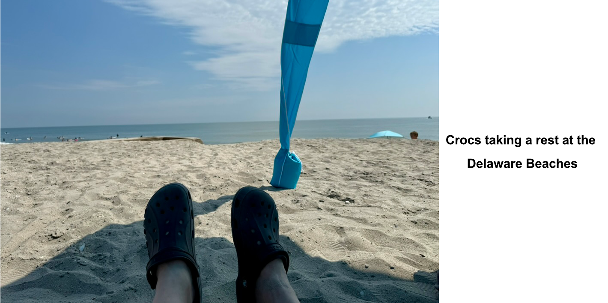
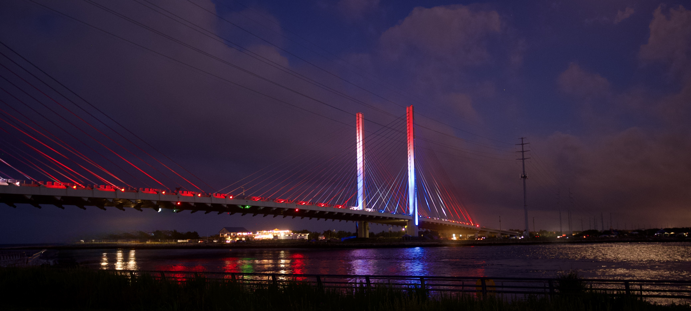
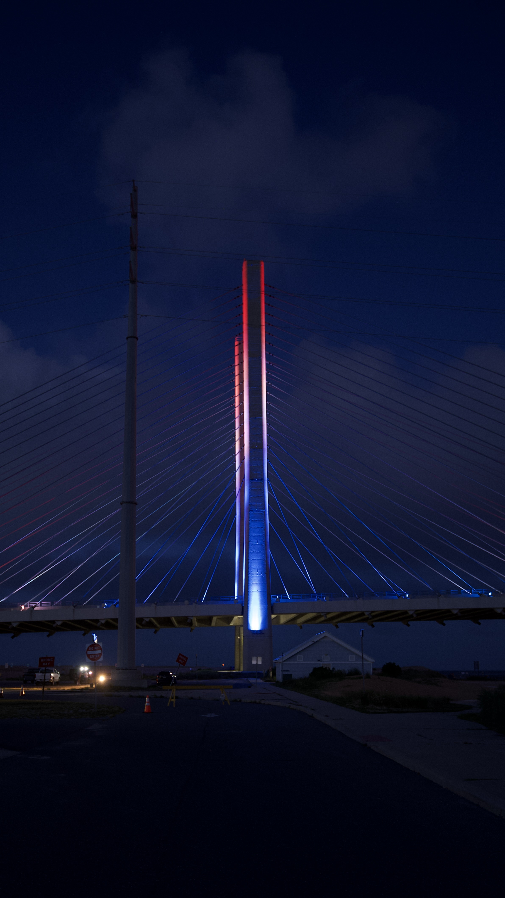
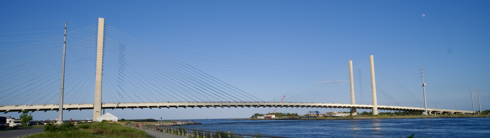
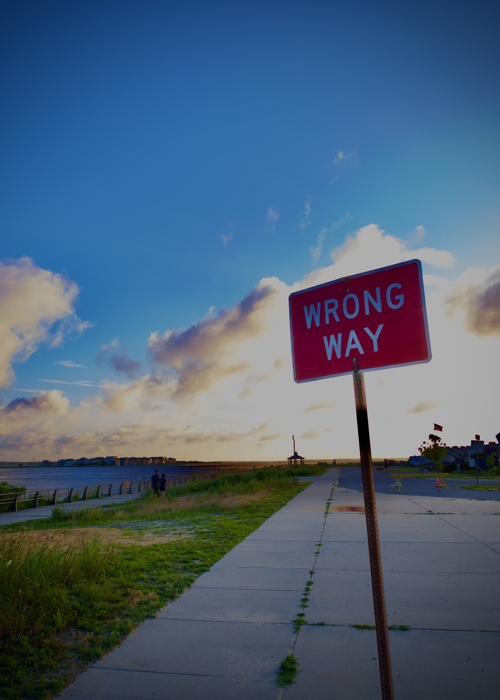
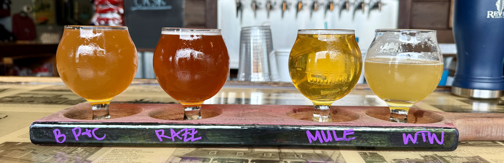
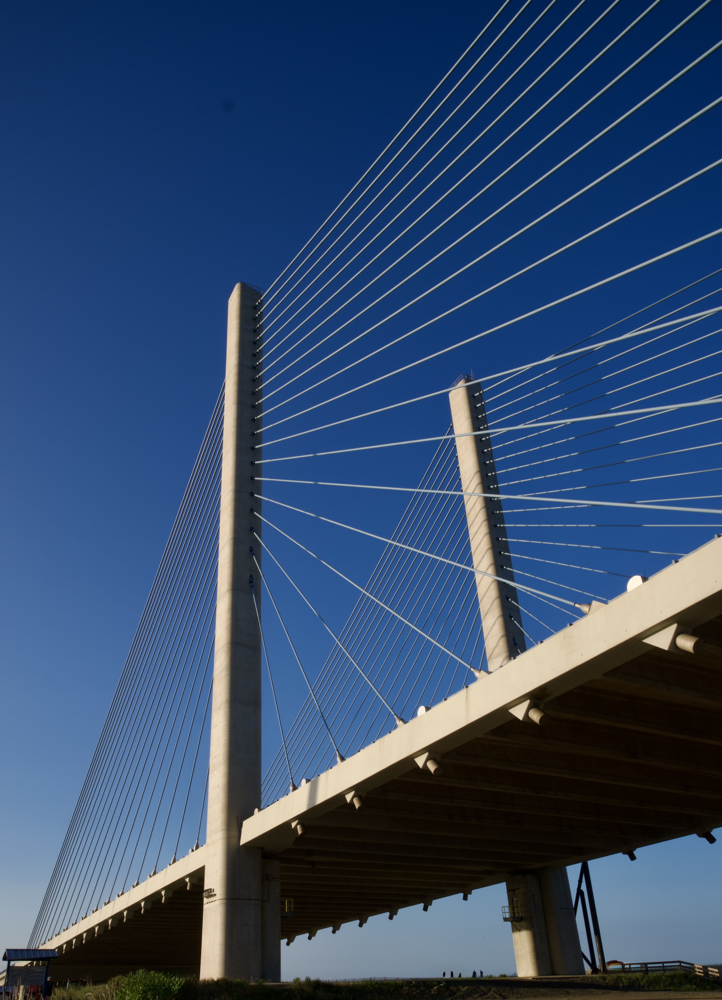
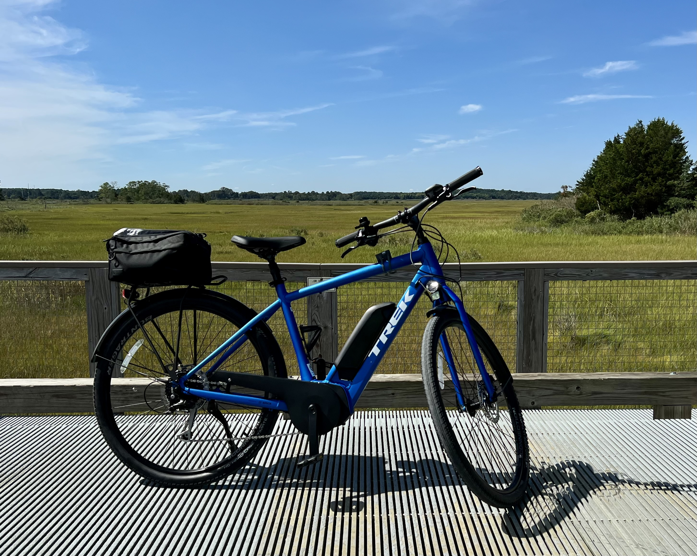
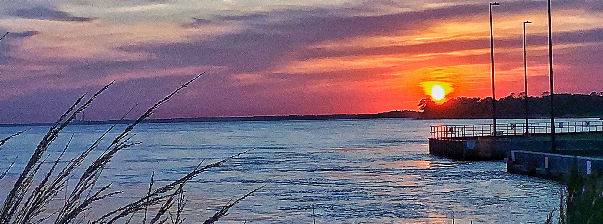
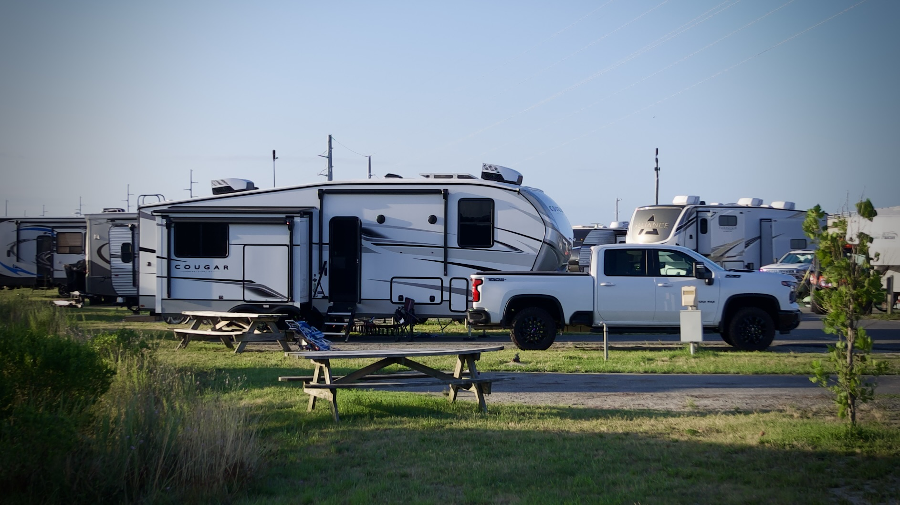

Tech-Enhanced Camping Adventures | July 2025

Time with family at the Delaware Beaches.
True work-life balance is found around a campfire—laughing with family, toes in the sand, and no deadlines except the rising tide at the Delaware beaches.
A Break from Tech: Camping at the Delaware Beaches
Almost all of my blog posts are focused on technology, but I wanted to take a moment to share a little about myself—the person behind the words. My wife and I love camping. She’s happiest relaxing at the beach with a good book, while I enjoy riding my E-Bike on nearby trails. Our favorite destination is the Rehoboth Beach and Bethany Beach area in Delaware.
E-Bike Dealers in the area that I had good experiences:
We usually stay at one of the Delaware State Parks. If you're considering a trip, plan ahead—reservations fill up fast and often need to be made a year in advance. The beginning of July is a special time for us, as it’s both my wife’s birthday and our anniversary. It’s a week we always try to set aside for camping.
Our go-to spot is Delaware Seashore State Park. While my wife unwinds by the ocean, soaking in the sights and sounds, I head out on my E-Bike to Gordon’s Pond and ride the trail to Cape Henlopen State Park.
We kicked off this trip with our first night at Killens Pond State Park. It was our first time camping there, and we really enjoyed the peaceful, wooded setting. One thing to note—there was no Starlink coverage at our campsite. There was very heavy tree cover and I could not get Starlink to work.
The Rehoboth Beach and Bethany Beach area is also home to some great restaurants we love visiting. I usually take the opportunity to enjoy seafood whenever we dine out, since I don’t cook it often at home.
One tech upgrade that’s really changed our camping experience is Starlink. As long as we have a clear view of the sky, it works flawlessly. We’re able to stream YouTube TV in the camper just like we would at home—blending our love for the outdoors with a little touch of modern convenience. This Blog was posted while sitting in the camper using Starlink for internet access.
Another piece of technology I rely on when towing our camper is the Garmin RV Navigator. It helps avoid roads that aren’t suitable for RVs, including those with low overpasses or weight restrictions. Unlike Google or Apple Maps, it's built specifically with RV travel in mind—making it a much safer choice when towing. I would never recommend towing an RV using only Google or Apple Maps. They’re just not designed with RV-specific routes in mind, which can lead to dangerous situations like low clearances or restricted roads.
I’m also a big fan of the towing technology built into today’s pickup trucks. We have a Chevrolet 2500, and one of my favorite features is what happens when you plug in a trailer—when you activate the turn signal, the large dash display shows a live camera view of the side of the truck and the entire length of the camper.
It’s a great safety feature, especially when other drivers are impatient and try to pass at the worst times. Towing doesn’t always get the respect it deserves on the road—everyone seems to be in a rush and eager to get around an RV as quickly as possible.
A great way to securely access your home lab while camping with Starlink internet is by using Twingate. Unlike traditional VPNs, there’s no need to open remote ports. I run a simple Rocky Linux VM with the Twingate connector, and it works seamlessly. The Twingate Starter Plan is a great (and free) way to get started.
When I get home from this camping trip, it’ll be time to put the finishing touches on my VMware Explore 2025 session, Enhancing VMware Cloud Foundation Operation Management Packs with PowerShell - CODEQT1121LV. I also need to spend some time pulling together content for the VMware Explore Hackathon (I will be a Team Captain)—something I’m really looking forward to.
If you’re reading this and plan to attend VMware Explore 2025, feel free to look me up or stop by the Hands-on Labs (HOL) area. I’ll be spending a lot of time there this year as a member of the HOL team!
Camping Pics:
- Indian River Inlet Bridge

- Indian River Inlet Bridge

- Indian River Inlet Bridge

- Delaware Seashore State Park

- Delaware Seashore State Park

- Delaware Seashore State Park

- Revelation Brewing - Rehoboth Beach, DE

- Indian River Inlet Bridge

- Gordon's Pond State Park, DE - I love riding the elevated trail section

- Delaware Seashore Fresh Pond Trails

- Gordon's Pond State Park, DE

- Delaware Seashore State Park

- Killens Pond State Park

- Delaware Seashore State Park

Lessons Learned
- Make time for yourself and your family—it matters.
- The best burnout remedy? A good camping trip.
- Riding an E-Bike is pure joy—explore more with ease.